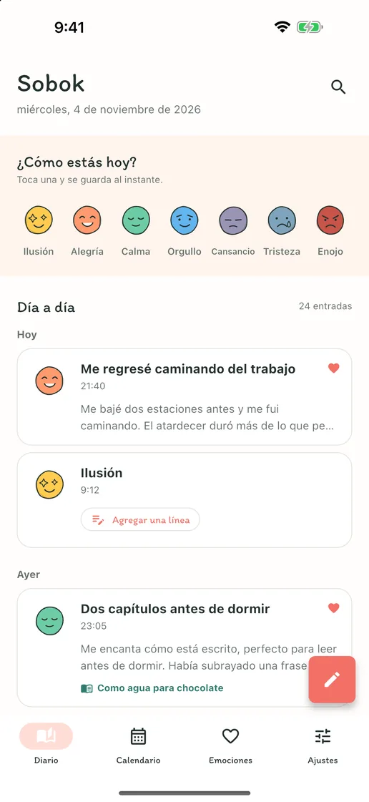
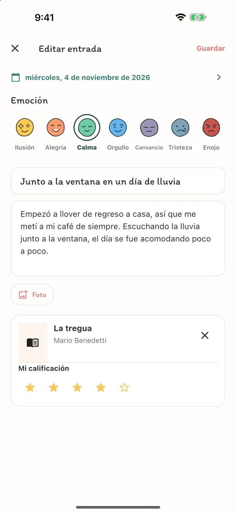
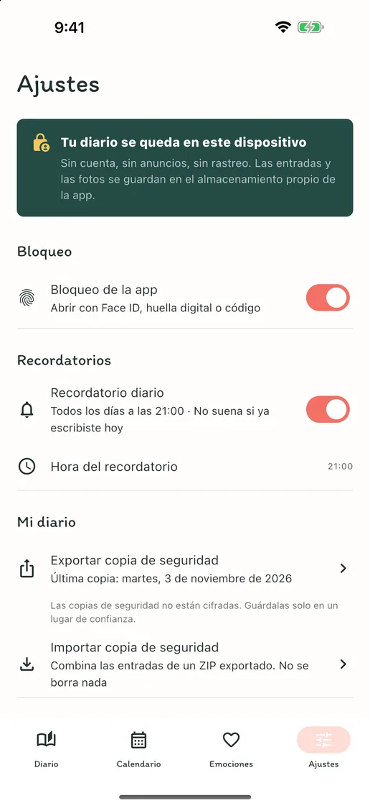
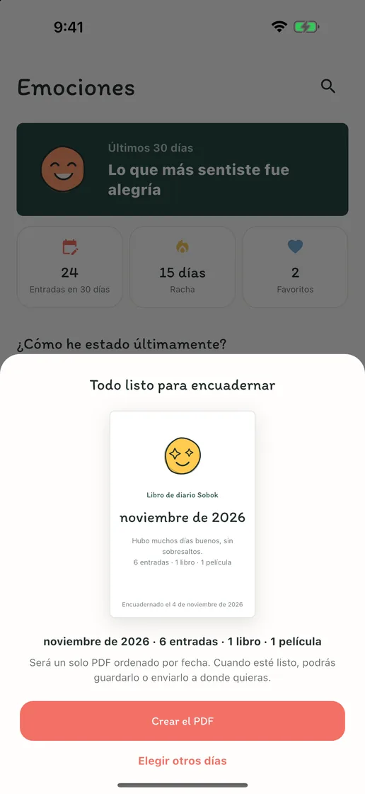
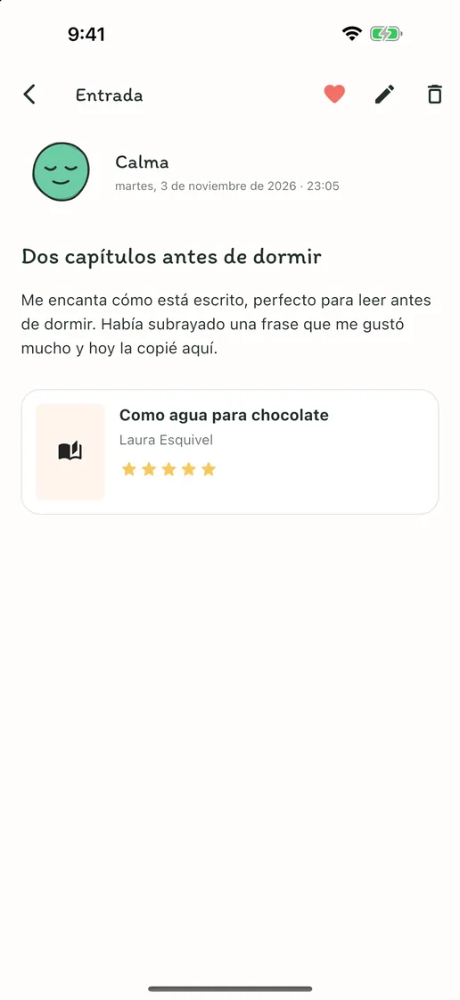
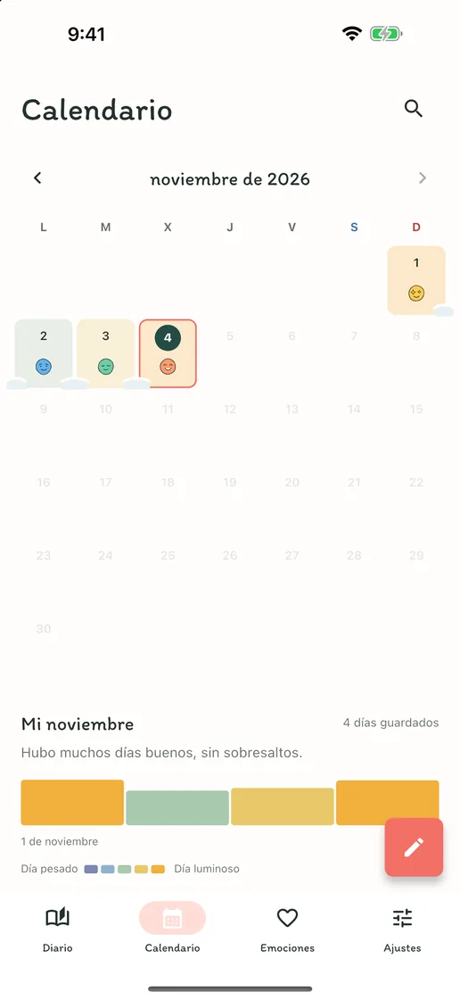
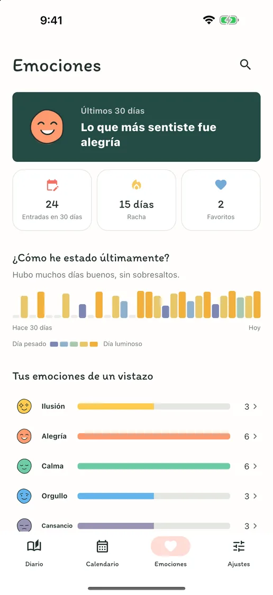

Tu emoción de hoy, en un toque
Toca una de las siete caras de emociones y se convierte en la entrada de hoy. Cuando tengas algo que decir, agrega unas líneas a esa misma entrada.
Emociones, palabras, libros y cine
Sin cuenta, anuncios ni suscripción. Toca una emoción y guarda el día; en la misma entrada caben textos largos, fotos y notas de libros y películas. Todo en tu teléfono.
Muy pronto en App Store y Google PlayGratis · Compras dentro de la app · iPhone y Android · English · Deutsch · Tiếng Việt · Español · Bahasa Indonesia · 日本語 · 简体中文 · 繁體中文 · ไทย · Português · Français · 한국어


Escribe todo lo que quieras
Los días en que no hay nada que decir, un toque en una emoción guarda el día. Los días en que quieres escribir, en una sola entrada caben un título, textos largos, fotos y notas del libro que acabas de leer o de la película que acabas de ver.
Toca una de las siete caras de emociones y se convierte en la entrada de hoy. Cuando tengas algo que decir, agrega unas líneas a esa misma entrada.
Un título, textos largos, fotos y una calificación: agrega solo lo que quieras ese día. Busca el libro que acabas de leer o la película que acabas de ver, o escríbelo a mano.
Cada día que escribes, su emoción se posa en el calendario, y los días seguidos se juntan como nieve. Ve de un vistazo qué semanas fueron buenas y cuáles difíciles.
Dentro de la app
“Sobok-sobok” es el sonido coreano de la nieve que se acumula en silencio: así se van juntando aquí tus días, uno a uno.





Sin registro, sin anuncios, sin rastreo. Tu diario se guarda solo en tu dispositivo, y puedes exportar todas tus entradas y fotos en un archivo ZIP para recuperarlas en un dispositivo nuevo. Escribir, buscar, el calendario, el bloqueo de la app y las copias de seguridad son gratis; solo Sobok Plus, que encuaderna tus entradas en un libro de diario en PDF, es una compra única.